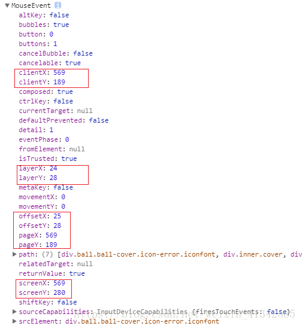
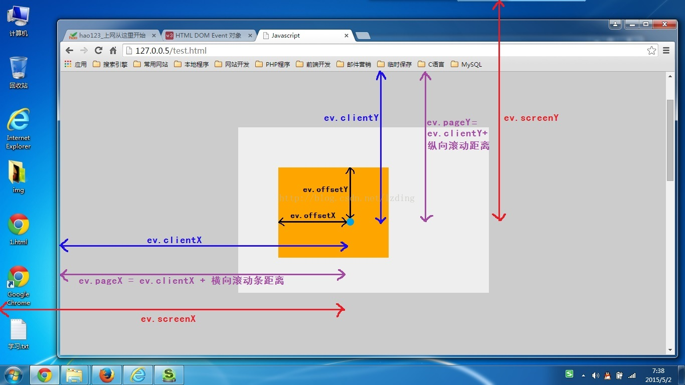

网页可视区域
<!doctype html>下测试; FF; Chrome; IE7+; IE6- 没有测试环境，所以未测试
//JS
document.documentElement.clientWidth
document.documentElement.clientHeight
//JQuery
$(window).width()
$(window).height()
- 注意点
- 如果页面中有动态加载的DOM，获取网页可视区域的JS要放在动态加载DOM结构的JS前，否则FF chrome中获取的值不正确，IE7+中不受此影响，一直都正常。
屏幕分辨率
<!doctype html>下测试; FF; Chrome; IE7+; IE6- 没有测试环境，所以未测试
//屏幕分辨率
window.screen.width
window.screen.height
//屏幕可用工作区(即屏幕分辨率－任务栏)
window.screen.availWidth
window.screen.availHeight
鼠标事件 MouseEvent
clientX、clientY
点击位置距离当前body可视区域的x，y坐标
pageX、pageY
对于整个页面来说，包括了被卷去的body部分的长度
screenX、screenY
点击位置距离当前电脑屏幕的x，y坐标
offsetX、offsetY
相对于带有定位的父盒子的x，y坐标
x、y
和clientX、clientY一样


.offset()与.position()区别
.offset() -jquery-
- 获取/设置的坐标相对于文档（document）
- 若元素的属性设置的是 visibility:hidden，那么我们依然可以取得它的坐标。但是若设置的属性是 display:none，由于在绘制 DOM 树时根本就不绘制该元素，所以它的位置属性值是 undefined。
- .offset()方法允许我们重新设置元素的位置，这个元素的位置是相对于document对象的。如果对象原先的position样式属性是static的话，会被改成relative来实现重定位。
.position() -jquery-
- 获取匹配元素中第一个元素的当前坐标，相对于offset parent的坐标。（如果其祖先元素未定位，获取的则是相对于 html 的坐标）
offsetParent
.offsetParent() -jquery-
取得离指定元素最近的含有定位信息的祖先元素。含有定位信息的元素指的是，CSS 的 position 属性是 relative, absolute, 或 fixed 的元素。
HTMLElement.offsetParent
- HTMLElement.offsetParent 是一个只读属性，返回一个指向最近的（指包含层级上的最近）包含该元素的 定位 元素或者最近的 table,td,th,body元素。
- offsetTop 和 offsetLeft 都是相对于其内边距边界的。
- 在 Webkit 中，如果元素为隐藏的（该元素或其祖先元素的 style.display 为 "none"），或者该元素的 style.position 被设为 "fixed"，则该属性返回 null。
- 在 IE 9 中，如果该元素的 style.position 被设置为 "fixed"，则该属性返回 null。（display:none 无影响。）
HTMLElement.offsetLeft、HTMLElement.offsetTop
块元素和行内元素的 offsetLeft offsetTop 好像不一样，文档中有描述，未看懂。